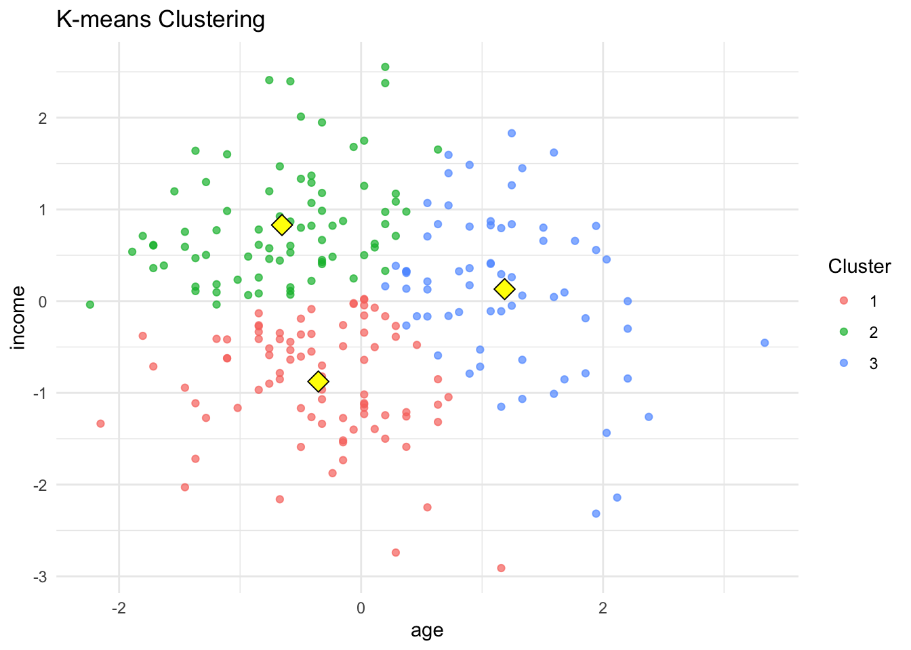
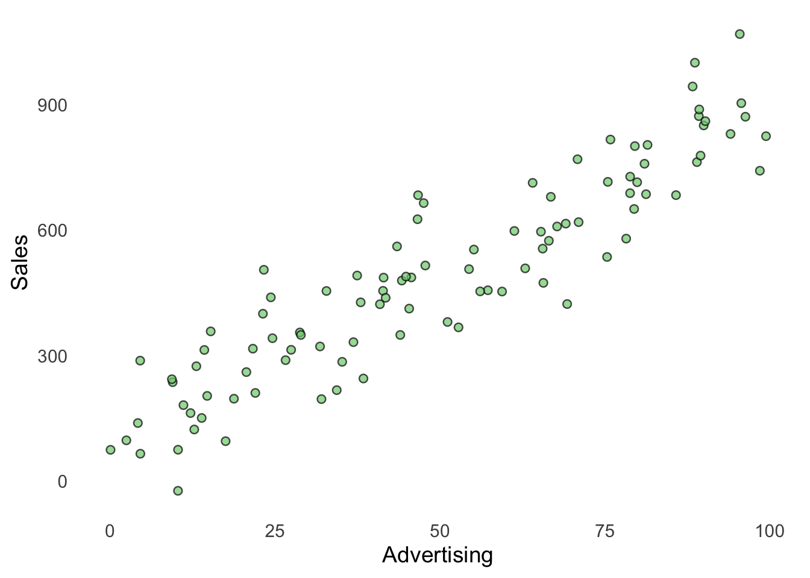
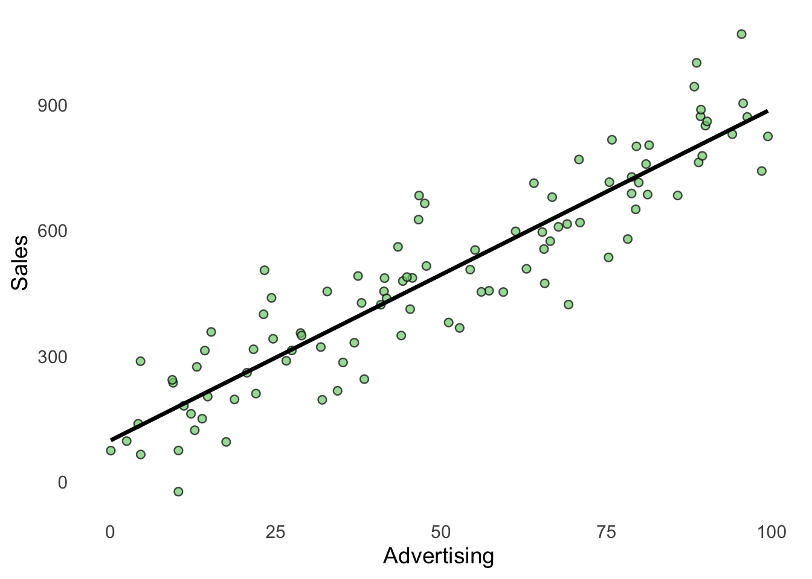
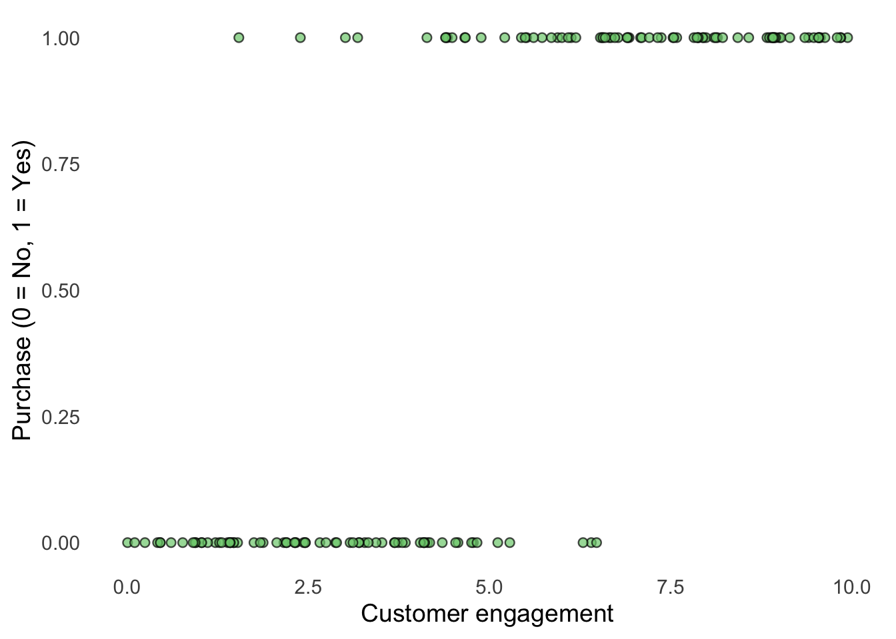
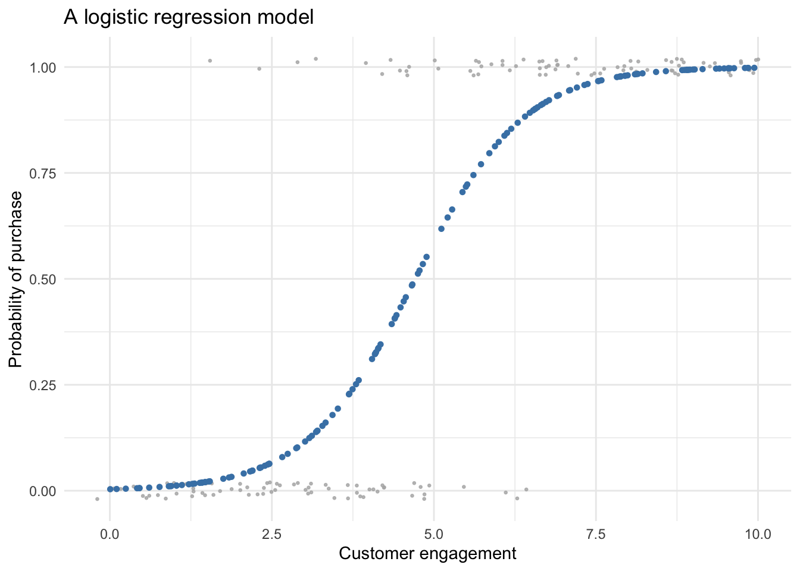
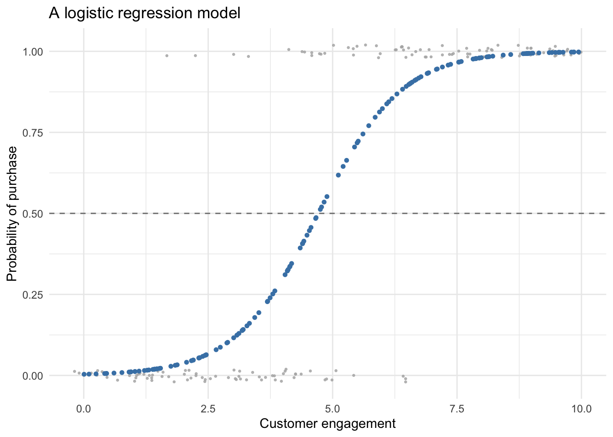

8 Three Algorithms
8.1 Introduction
During this course, we will work with three influential methods that are widely used in business analytics, statistics, and machine learning. Each method solves a different type of problem. Before starting this chapter, we recommend that you read the following chapters and sections in An Introduction to Statistical Learning with Applications in R:
- K-means cluster analysis: Read Sections 12.1, 12.4, and 12.4.1.
- Multiple linear regression: Read Sections 3.0, 3.1, and 3.1.1.
- Logistic regression: Read Sections 4.1, 4.2, 4.3.1, and 4.3.2.
These readings provide the theoretical foundation for the methods. In this course, we will focus primarily on how to apply the methods in R, evaluate and interpret the results, and use them to address business-related problems.
| Method | Main purpose | Typical business question |
|---|---|---|
| K-means clustering | Find groups or patterns | Can we identify different customer segments? |
| Linear regression | Predict a numerical outcome | What predicts sales, revenue, or spending? |
| Logistic regression | Predict a binary outcome | Which customers are likely to buy or churn? |
The purpose of this chapter is not to study each method in detail. Instead, the goal is to build an intuitive understanding of what each algorithm does. Later chapters will show how to specify, estimate, and evaluate each type of model.
8.2 Business applications
8.2.1 K-means cluster analysis
K-means clustering is useful when we want to identify groups of similar observations without having a predefined outcome variable. Examples include:
- customer segmentation,
- market segmentation,
- grouping employees by skill,
- grouping products with similar characteristics.
Clustering becomes particularly useful when there are many variables and the groups can no longer be identified by simply looking at a two-dimensional plot.
8.2.2 Multiple linear regression
Multiple linear regression is useful when we want to explain or predict a quantitative outcome using several predictor variables. Examples include:
- predicting sales based on marketing expenditure, price, and economic conditions,
- estimating customer spending based on demographic and behavioral characteristics,
- forecasting employee productivity based on experience, training, and workload,
- predicting housing prices based on size, location, and other property characteristics,
- estimating production costs based on output, labor, and material inputs.
Regression models can help organizations understand relationships between variables and generate predictions that support planning and decision-making.
8.2.3 Logistic regression
Logistic regression is useful when we want to predict a categorical outcome, most commonly an outcome with two possible classes. Examples include:
- predicting whether a customer will make a purchase,
- predicting whether a customer will cancel a subscription,
- identifying whether a loan applicant is likely to default,
- predicting whether an employee will leave the organization,
- identifying whether a transaction is potentially fraudulent,
- predicting whether a marketing campaign will result in a customer response.
Logistic regression produces estimated probabilities that can be converted into classifications using a chosen classification threshold. This makes the method useful for business decisions where observations need to be assigned to different categories.
8.3 K-means Cluster Analysis
Cluster analysis is used when we want to discover groups in data. Importantly, the groups are not given to us in advance. The algorithm tries to discover them from patterns in the data. K-means clustering is one of the most widely used clustering algorithms.
8.3.1 A visual starting point
First, clear the Environment and load the required packages:
# Clear the environment
rm(list = ls())
# Load required packages
library(tidyverse)
source("Functions/EDA_functions.R")
source("Functions/Cluster_functions.R")
source("Functions/linear_regression_functions.R")
source("Functions/logistics.R")
# Import a dataset
df <- read.csv("Data/df_clean.csv")Lets plot the relationship between age and income:
scatterplot(
df,
age,
income,
xlab = "Age",
ylab = "Income"
)
Look at the relationship between age and income: can you identify groups visually? K-means clustering automates this process. K-means assigns observations to groups based on how similar they are to one another. The basic logic is simple.
8.3.1.1 Step 1: Choose the number of clusters
We decide how many clusters, K, the algorithm should create. For example: K = 3 means that we want the algorithm to create three groups.
8.3.1.2 Step 2: Start with cluster centers
The algorithm selects initial cluster centers, called centroids.
8.3.1.3 Step 3: Assign observations
Each observation is assigned to the closest centroid. The distance between two observations can be calculated using Euclidean distance. For two points, \(p\) and \(q\):
\[ d(p,q) = \sqrt{ (p_1-q_1)^2 + (p_2-q_2)^2 } \]
You do not need to calculate this by hand in this course. R does it for us.
8.3.1.4 Step 4: Update the centers
The centroid of each cluster is recalculated based on the observations currently assigned to that cluster.
8.3.1.5 Step 5: Repeat
The algorithm repeats the assignment and update steps until the clusters stabilize.
8.3.2 Run a simple K-means model
Because K-means clustering is based on distances between observations, variables measured on very different scales should usually be standardized before applying the method. For example, income may be measured in hundreds of thousands of SEK, while age is measured in years. Without standardization, variables with larger numerical values may have a much greater influence on the resulting clusters.
Create a standardized version of the dataset using the code below. You should already be familiar with most of the notation and functions. The new function is scale(), which we use to standardize the variables.
df_km <- df |>
select(age, income) |>
na.omit() |>
scale() |>
as.data.frame()Run K-means with three clusters using the following code. The algorithm will: take the standardized data, divide the observations into three clusters, try 25 different starting solutions, keep the best solution, and save the result as an object which we name ‘km’.
set.seed(123)
km <- kmeans(
df_km,
centers = 3,
nstart = 25
)K-means begins by randomly selecting starting positions for the cluster centers. Because of this randomness, running the same analysis twice will produce slightly different results. set.seed(123) makes the random process reproducible. The number 123 itself is arbitrary.
kmeans(…) is the R function that performs K-means clustering.
df_km tells R which data to use. Here, df_km contains the standardized variables age and income.
centers = 3 tells K-means that we want to divide the observations into three clusters.
Because K-means starts from randomly chosen cluster centers, a poor starting point can sometimes produce a poor solution. nstart = 25 tells R to run the K-means algorithm 25 times with different random starting points and keep the best solution.
km <- kmeans stores the result in an object called ‘km’. This object contains information about the clustering, including which cluster each observation belongs to and the location of the three cluster centers.
We also have to add the cluster assignments to the data frame:
df_km$cluster <- factor(km$cluster)And we can visualize the result:
plot_kmeans_clusters(
data = df_km,
var1 = "age",
var2 = "income",
kmeans_model = km
)
We now have created groups based on similarities between observations.
8.4 Linear Regression
Linear regression is used when we want to understand or predict a numerical outcome. Suppose we want to understand whether sales increase when advertising increases. A simple linear regression model can be written as:
\[ y = \beta_0 + \beta_1x + \varepsilon \]
where:
- \(y\) is the outcome we want to explain or predict (sales),
- \(x\) is a predictor (advertising),
- \(\beta_0\) is the intercept,
- \(\beta_1\) is the slope,
- \(\varepsilon\) represents variation not captured by the model.
Linear regression finds the straight line that best describes the relationship between the variables. We can draw the straight line if we know the intercept and the slope.
8.4.1 A simple linear regression example
Generate a small artificial dataset:
set.seed(123)
df_lm <- tibble(
advertising = runif(100, 0, 100),
sales = 100 + 8 * advertising + rnorm(100, 0, 100)
)Look at the data:
scatterplot(
data = df_lm,
xvar = advertising,
yvar = sales,
xlab = "Advertising",
ylab = "Sales"
)
Fit a linear model:
model_lm <- lm(
sales ~ advertising,
data = df_lm
)Visualize the fitted line:
# Visualize the fitted regression model
plot_regression_line(
data = df_lm,
model = model_lm,
xvar = advertising,
yvar = sales,
xlab = "Advertising",
ylab = "Sales"
)
The model simplifies the relationship between advertising and sales into a straight line.
What we have done is that linear regression chooses the values of the model parameters that make the line fit the observed data as closely as possible. The model, in this case, is represented by the intercept and the slope. The difference between an observed value and the value predicted by the model is called a residual.
Ordinary Least Squares (OLS) chooses the line that minimizes the sum of squared residuals. You do not need to calculate the solution by hand in this course. R estimates the model for us. Later, we will extend this idea to multiple linear regression, where several predictor variables are used together.
8.5 Logistic Regression
Logistic regression is used when the outcome has two categories. Instead of predicting a numerical value such as sales, logistic regression predicts the probability that an event occurs. For example: What is the probability that a customer makes a purchase?
The predicted probability is always between:
\[ 0 \leq P(Y=1) \leq 1 \]
8.5.1 A simple logistic regression example
Generate artificial data where the probability of purchase increases with customer engagement. (You don’t need to understand this code example):
set.seed(123)
n <- 150
df_logit <- tibble(
engagement = runif(n, 0, 10)
) |>
mutate(
probability = plogis(-5 + engagement),
purchase = rbinom(
n,
size = 1,
prob = probability
)
)Look at the observations:
scatterplot(
data = df_logit,
xvar = engagement,
yvar = purchase,
xlab = "Customer engagement",
ylab = "Purchase (0 = No, 1 = Yes)"
)
Fit a logistic regression model:
# Fit the logistic regression model
model_logit <- glm(
purchase ~ engagement,
data = df_logit,
family = binomial
)Visualize the estimated probability:
# Plot observed outcomes and predicted probabilities
plot_logistic_predictions(
model = model_logit,
df = df_logit,
x_var = "engagement",
y_var = "purchase",
title = "A logistic regression model",
x_label = "Customer engagement",
y_label = "Probability of purchase"
)
The S-shaped curve represents the model’s estimated probability. As engagement increases, the estimated probability of purchase also increases. Often we want to set some kind of classification threshold. In this case we will set it to 0.5 so that every observation below 0.5 is a ‘No’, and every observation above or equal to 0.5 is a ‘Yes’:
plot_logistic_predictions(
model = model_logit,
df = df_logit,
x_var = "engagement",
y_var = "purchase",
threshold = 0.5, # predicted probability
title = "A logistic regression model",
x_label = "Customer engagement",
y_label = "Probability of purchase"
)
You can experiment with different classification thresholds for the predicted probabilities and observe how the resulting classifications change. Later in the course, we will evaluate these classifications by examining how many observations are correctly and incorrectly classified into each category.
8.6 Comparing the three algorithms
The three methods solve different analytical problems.
| Method | Outcome | Main question |
|---|---|---|
| K-means clustering | No predefined outcome | Are there meaningful groups in the data? |
| Linear regression | Numerical | What predicts a numerical outcome? |
| Logistic regression | Binary | What predicts the probability of an event? |
Another useful way to distinguish them is:
Do we have an outcome variable?
|
┌────┴────┐
| |
No Yes
| |
K-means What type?
|
┌────┴────┐
| |
Numerical Binary
| |
Linear Logistic
regression regression8.7 What comes next?
This chapter has introduced the basic intuition behind the three methods. Later in the course, we will study each one in more detail. For each method, we will focus on:
- the business or research question,
- model specification,
- running the model in R,
- interpreting the results,
- evaluating model performance,
- and deciding whether the model is useful for the problem we want to solve.
The next chapter focuses on K-means cluster analysis.